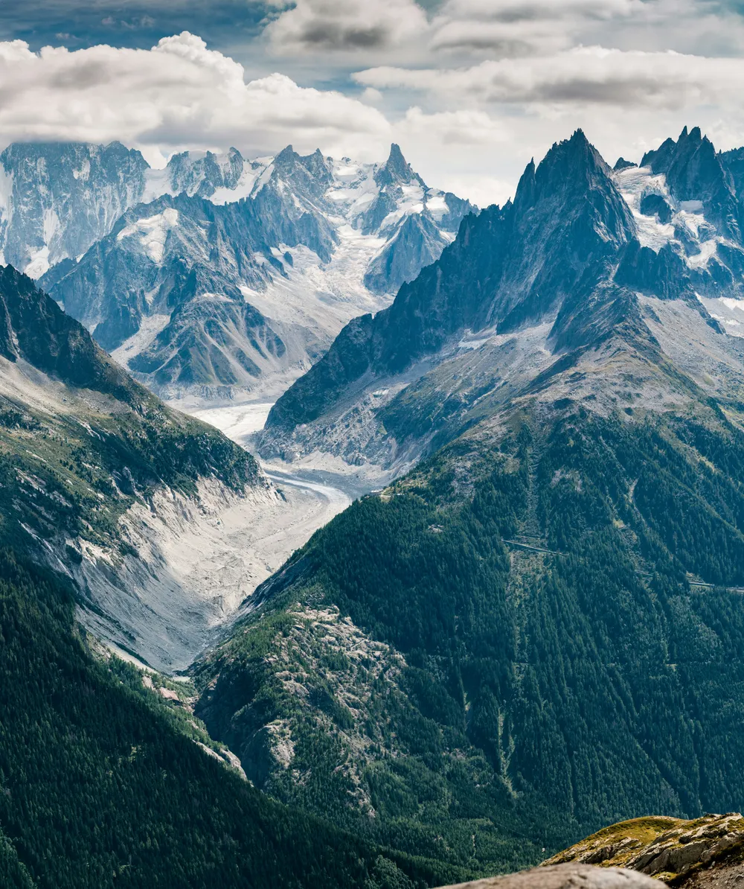
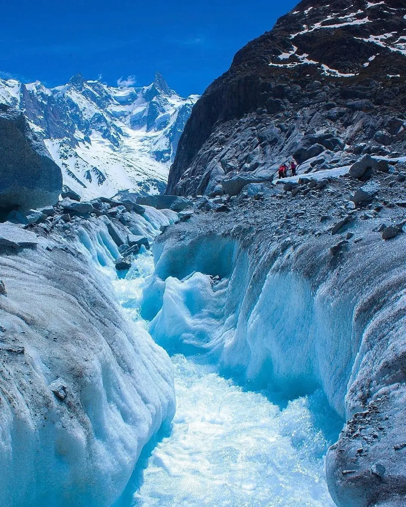
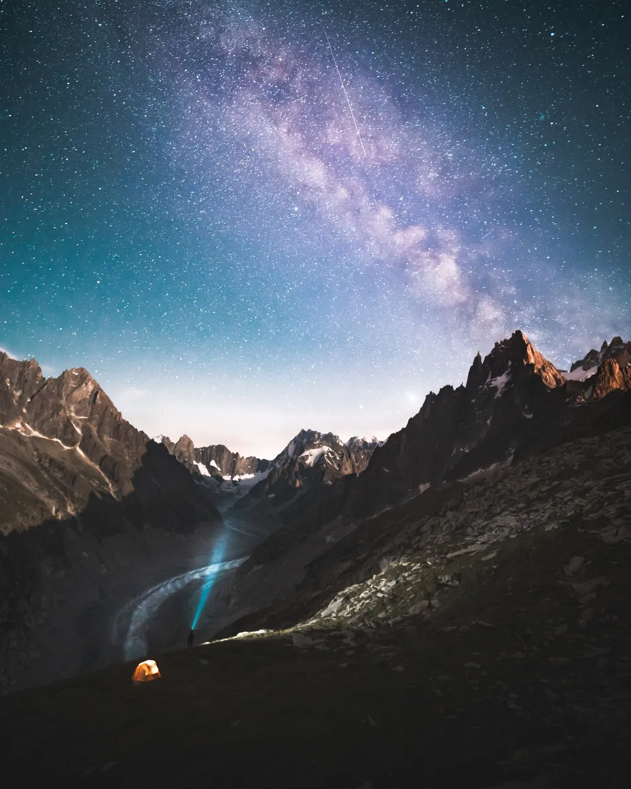
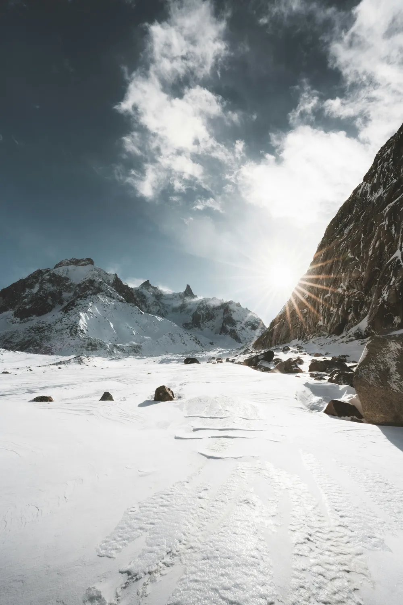

1 / 6 Photo · simon_fitallA RIVER OF ICE ABOVE CHAMONIX
Mer de Glace
The largest glacier in the French Alps. Take the red Montenvers train from Chamonix, then hike up and into the white.
RegionChamonix, France
AccessTrain + 45-60min hike
EffortModerate
Best lightAnytime (sunset / sunrise best)